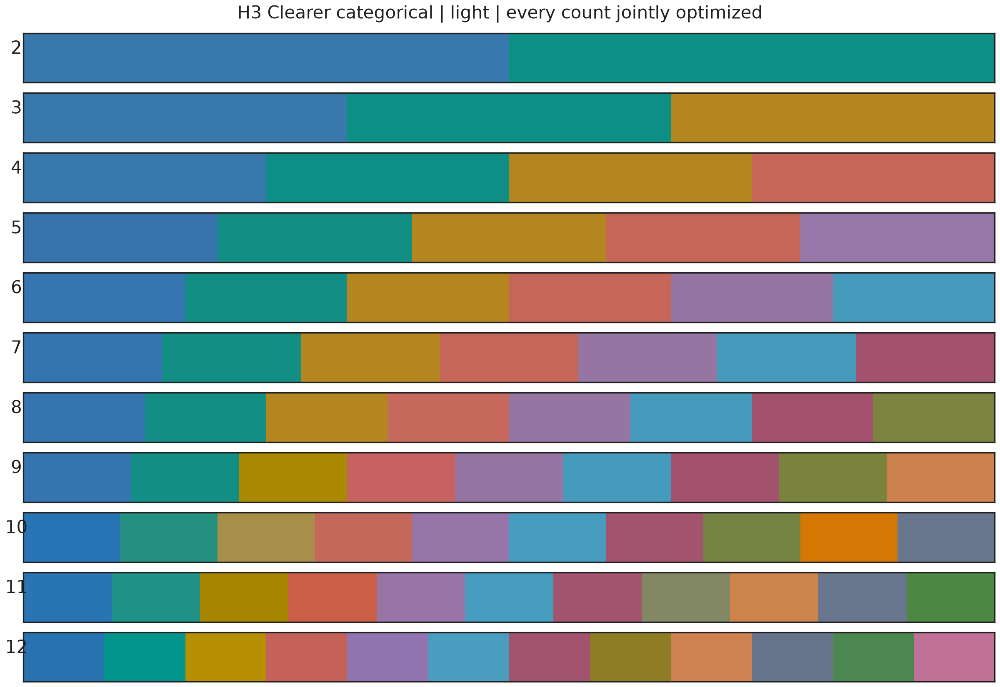
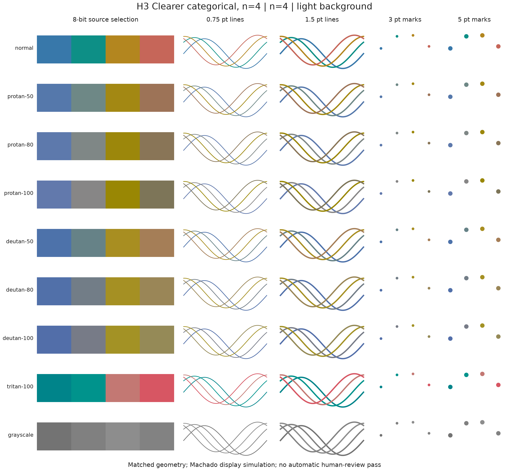
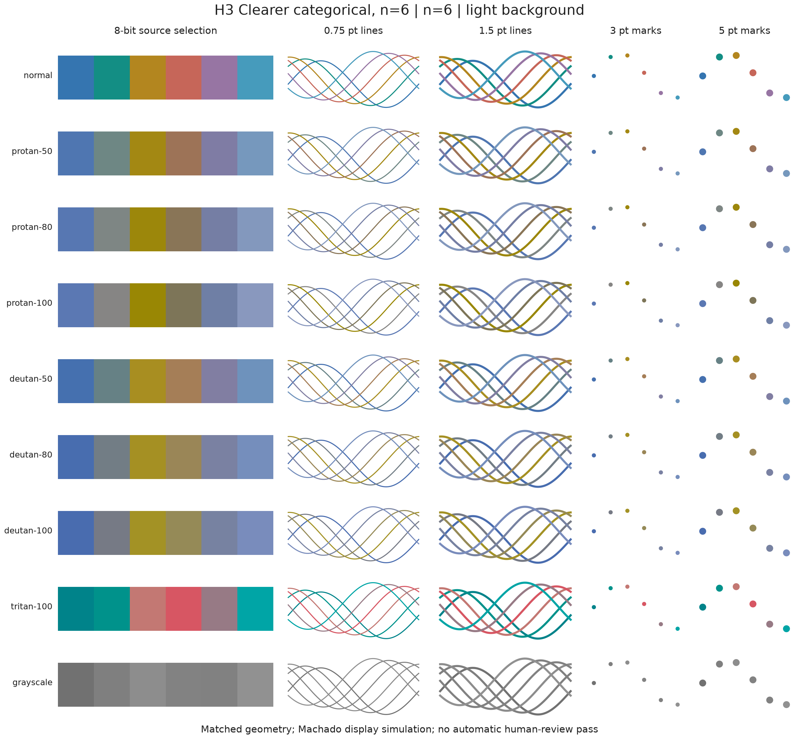
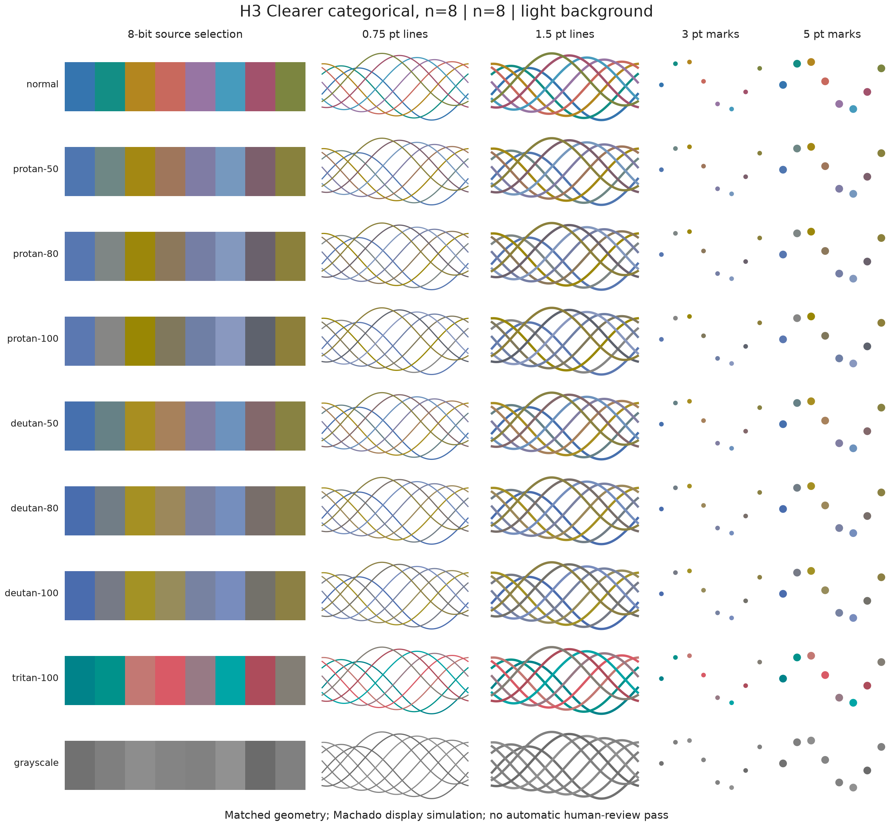
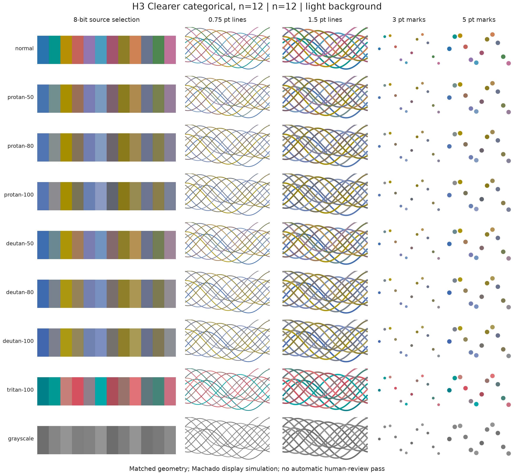
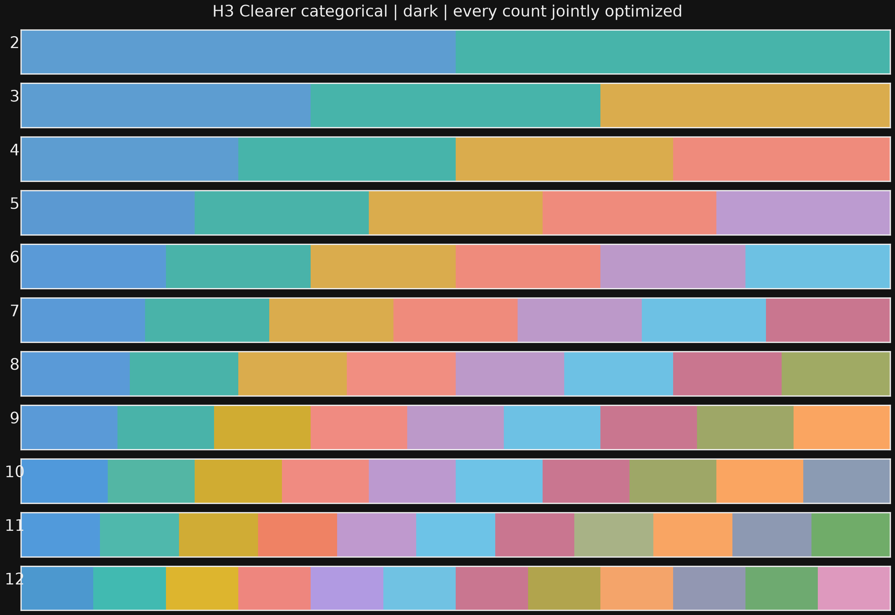
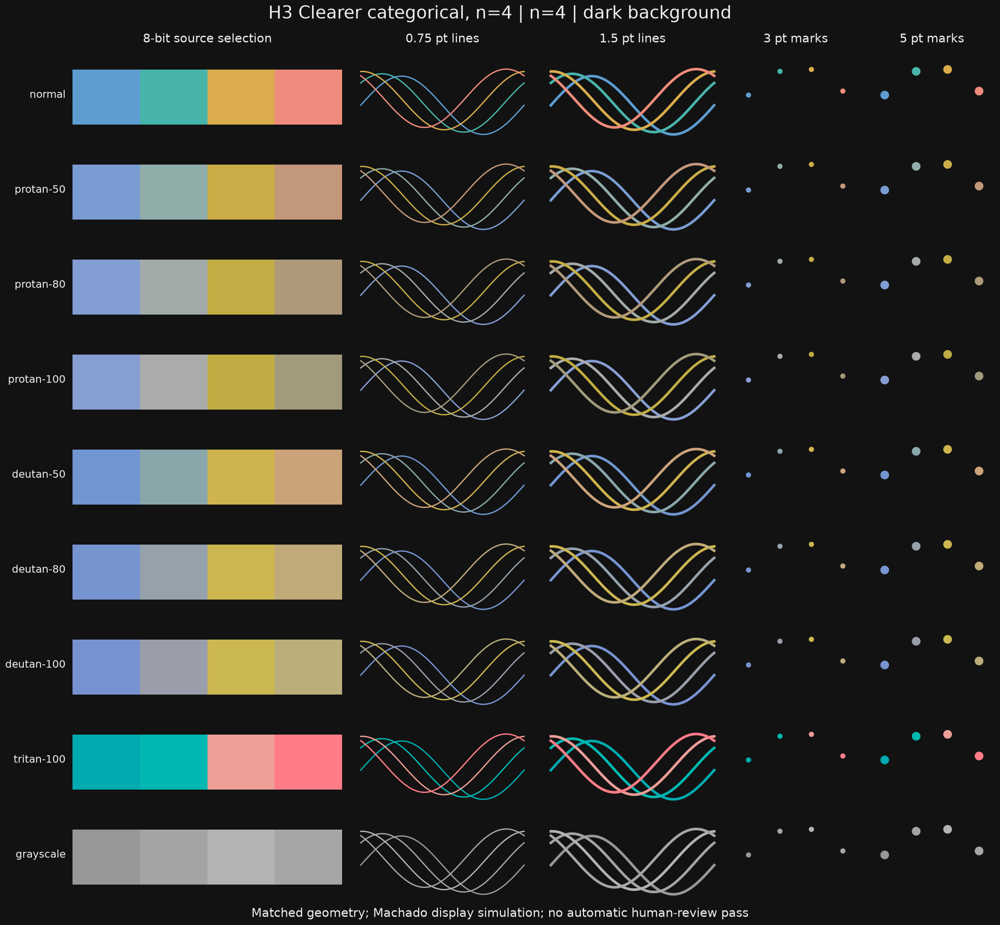
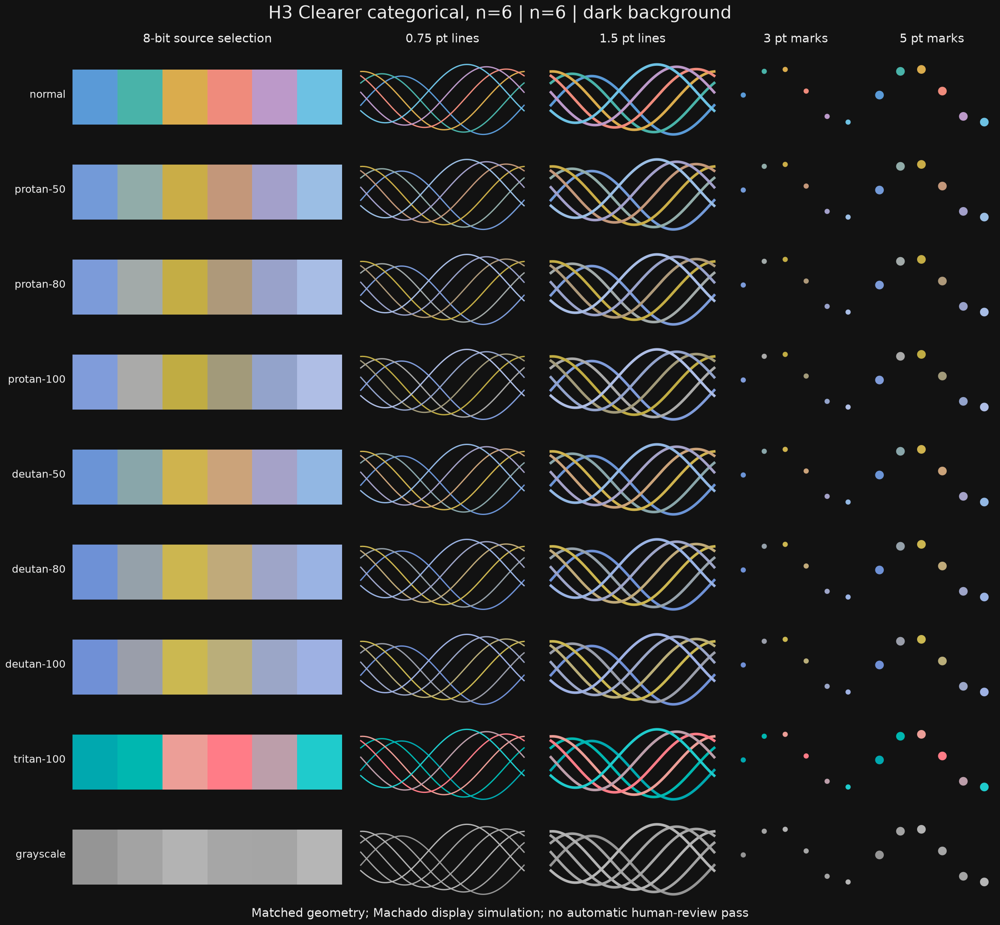
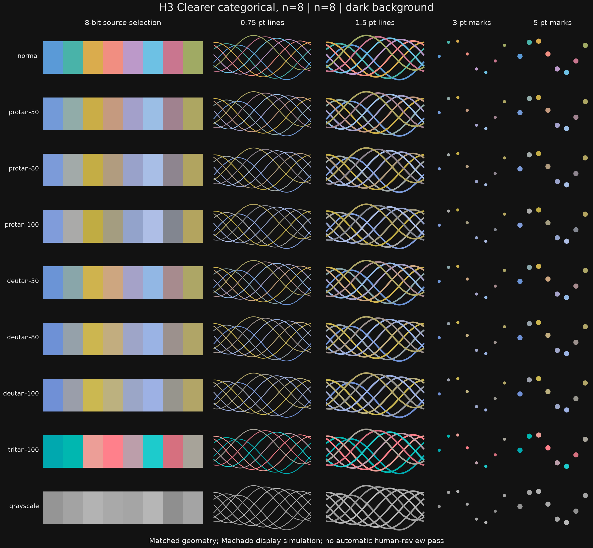
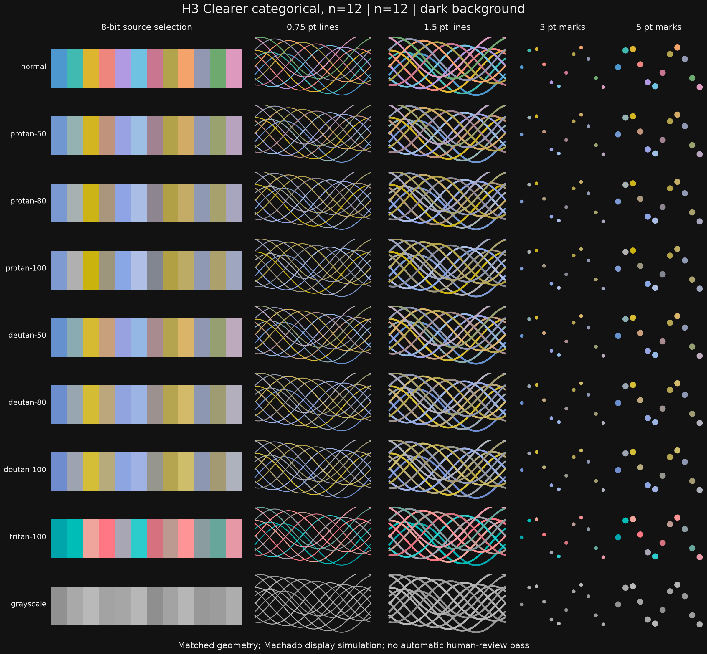

The user selected Clearer after comparing the original, Balanced, Softer and Clearer alternatives. It is now the default categorical construction. The original numerical thresholds remain unchanged. The direction is selected; expanded counts and H4 human validation remain separate.
Appearance selection study · Original H3 baseline and unchanged multi-hue/Spectral paths · H2 · Methods and migration · Full recipes/reports
Every count passes the original float/8-bit screens and the Clearer aesthetic envelope. Additional separation is traded for preserving the selected appearance.





Every count passes the original float/8-bit screens and the Clearer aesthetic envelope. Additional separation is traded for preserving the selected appearance.




